TITLE 22
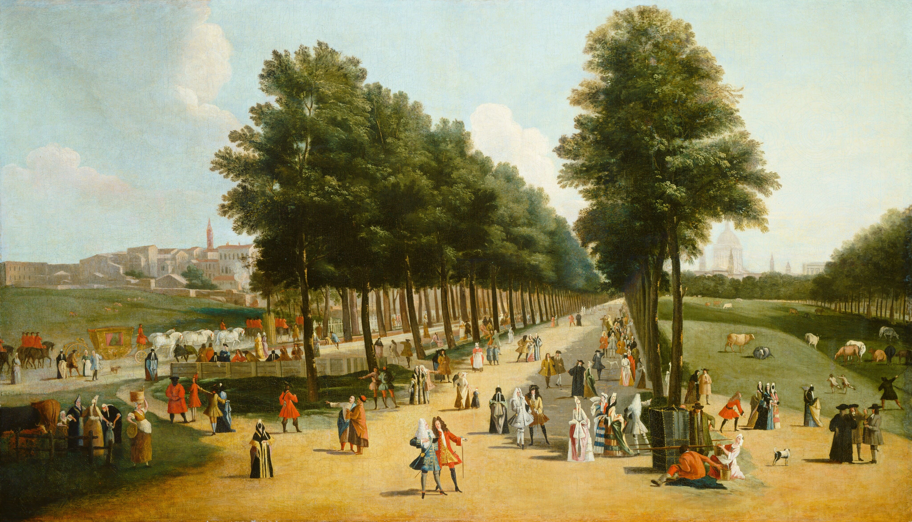Y los núcleos desde la boca hacia los patos,
-Apuesten, -No me acuesto, -El juego de los jugetes,
-No me retes, sólo son ratos y, -Estamso bien, Sigmaos.
-Timbre, toco hombre del hombro de los sombreros.
Sí, ya los vi, Opompellos montes y cea, -Lo que sea,
-No deseo, -blanco ni negro, Pero los jhones de los deeres,
-Siembro lo de siempre,
-Sembramos, -vamos, por ahí, no sé, ¿La lluvia?
Ver hay, -Galgos desde los galpones, -Bidones, -Botones, -Cinturones, -Por las praderas, -Riveras,
-De veras, -EL FUEGO, los fue let's go, Golems de Goldmans y Gelmands, Grandes Grandes Profundos.
TITLE 23
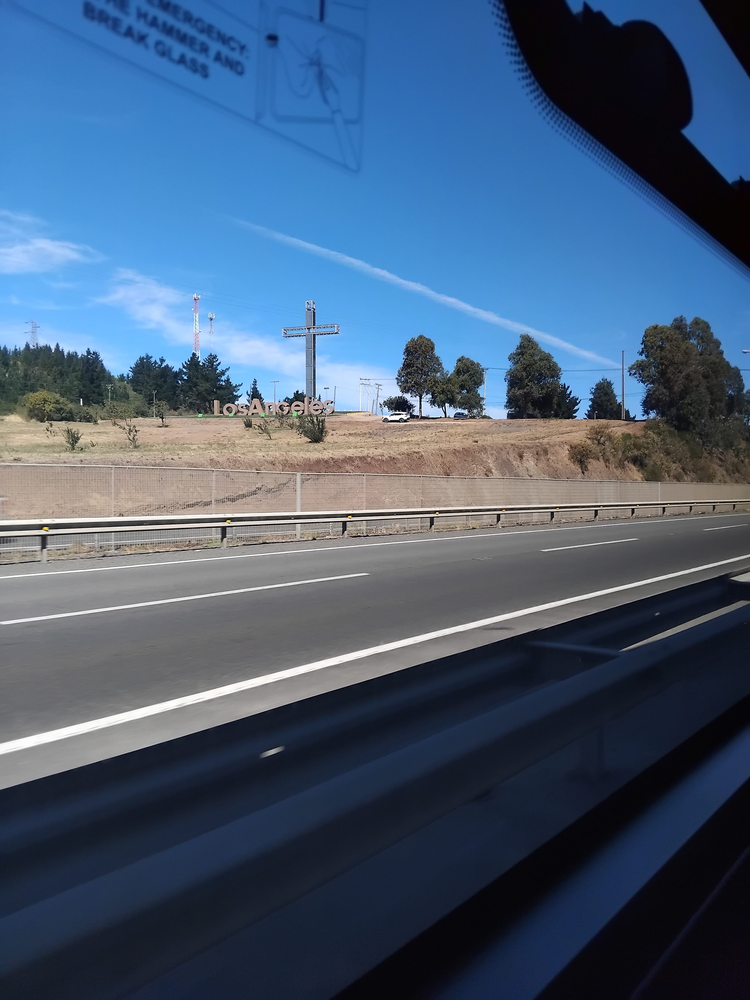Y choclos de los pasteles,
Pastén, No posteen, pantenes de los plantares,
Los vidrios desde los que no veo, nivea, -niveles,
Navíos novios navos nieves del chillan chillar.
-A medio camino!! -Cuerdas contra las cebollas.
Té, café, -no sé, -No quiero, Y los quiero tanto!
-No hay emergencia, Ni rotos ni violencia, -trenzas!
Trilladoras y trillones de trillados por trillar -talla, -toz.
-Las araucarias por la carretera vendiendo frutas.
-El cementerio, -todos me pillan, -Cebadas de Sevilla sin servilletas.
Anda la ferretería, -tuercas, torcos, -... -Bicicletas!!
Y las gradas no les agrado, -gracias, -todo graso, -Paso,
-Por el terminal, -El otro, -ya, de llaves que crecen!!
TITLE 24
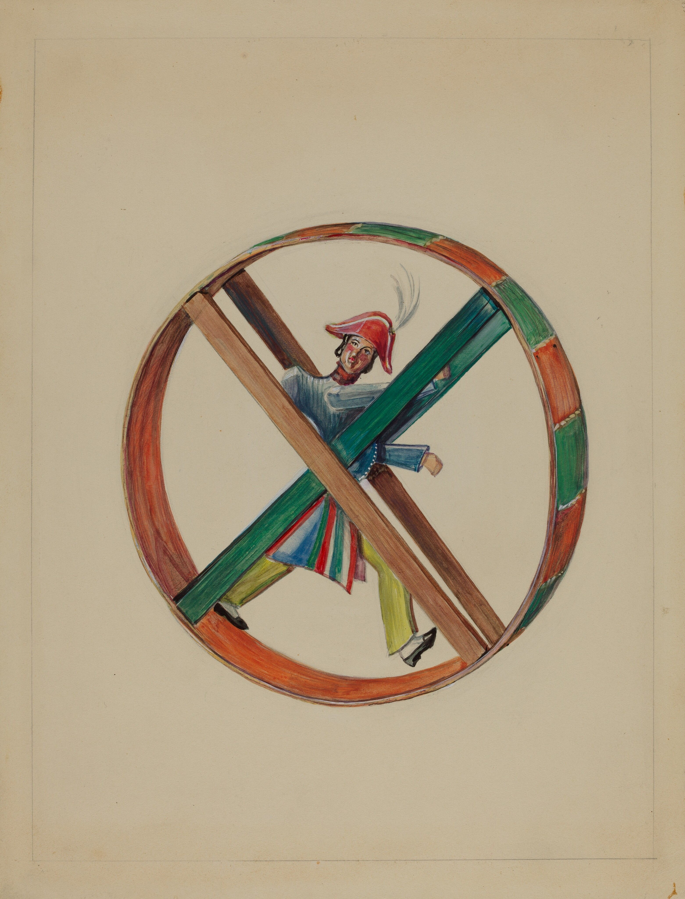Antenas de los andenes -andes,
Humos humeantes desde los puentes, -pontros,
El peligro de la más peligrosa/o, Esposas esposos,
-espuelas,
-rayuelas, chilenas -volteos y watts y centrifugas.
Vueltas y vueltas baldes y vale -todo, litros de codo,
El rodo del rodaje de las banderas, -A la primera,
Más frutas frutillas y piedras del monte, -montón,
-Amarillos, -No chaquetas, -Me desvío, -Bala del riel bolos y tarros y vidrios y rebolletas,
-Ya. -Bien,
Le sigue las riendas, y no se rinde, -Rrinde, -Deslinde, -Lindon, -landon, De dones de los davos -M.
-Alemán. -Imán de imanes. -No se piquen. -Ya.
-No lloren,
Cri, cri, cri, man mans im.
-Del estado de la plaza. -Plasos.
TITLE 25

Los Ángeles que me siguen,
Mujer y hombre de los bordelés,
Blood del blue desde los pinceles,
Princesa de los princesos, -Non Solus.
Principito de me queda grande,
De los trechos desde los pechos,
Y pachos mis niños y niñas, -content/s,
-Del escultor indescriptible indestructible de los vinos y desde las uvas.
Uva que subo que bajo y continuo, -i
-Yo no sé,
-Ya no sé,
¿Quién lo ha pensado en conocer?
-Ya te dije, -Soy hombre. -Baker, Sueños sureños.
TITLE 26
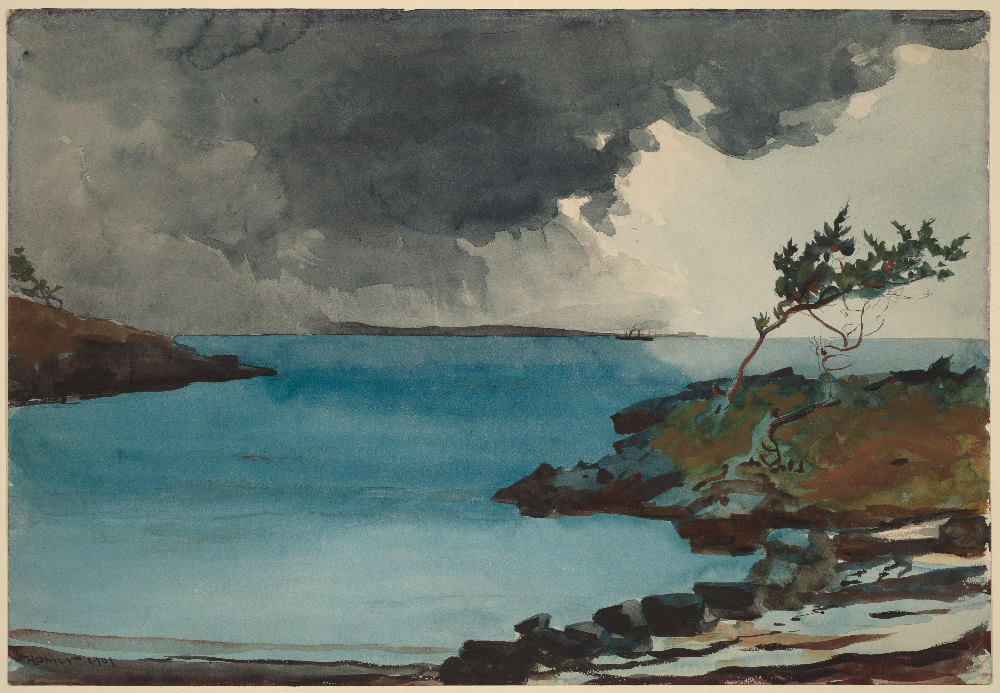Y voy vacío desde los llenos,
Y me la paso lleno desde los vacíos,
Y tres montes de Lucchetti desde los tigers,
Tijeretas, del León pardo hacia las Arvejas, -Oh.
Líneas non-lineares de aguas desde las tierras desde los ríos desde en medio al medio día y de media noche.
-Árboles, -Pozos -Osos -Pares -Impares -Iguales -ah!
-Me llené,
Nos llenamos de la ballena de los valettes desde Valería.
-Vórtices -Lloydes, -Voltex e ideal de las mesas,
Mazos Mozos Meses Miles de caballeros y 10 MM más.
-De menos,
-De más,
-Random de randon de los rum rum. Ha!.
Invierto Invierto y verto sobre los huertos, Que crezcan.
Ha! -Bueno -Bueno. --Bonos bonus vanus desde las manos. Ah! Oh!.
-El sabor.
Sobre los sobres. Ah! Oh! -Qué me pasa!!!
TITLE 27
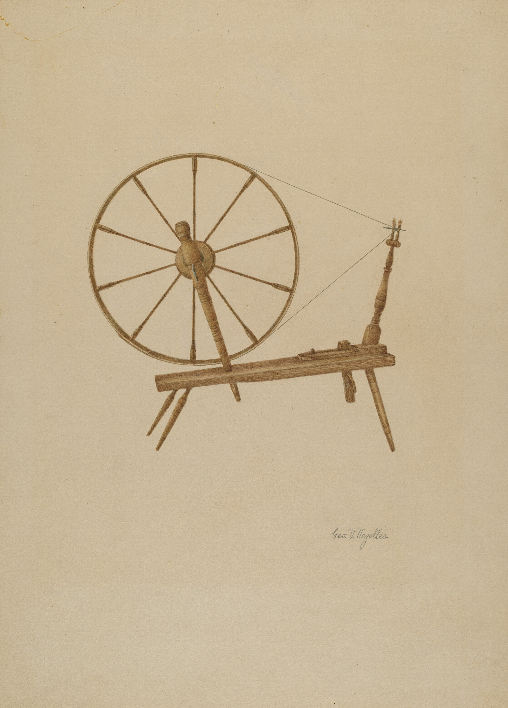Rotatorr de ruedas des dos de los dientes,
Llantas de los guerra, agarre, -La gorra. -Los gorros.
Ganas que tengo de acelerar y correr y del tanque de las tanquetas ayudar,
Ayudemos a construir la casa de loss -Osos,
Blublosos bubbles de bablles bleves vlibores.
-Labores mayores, -Señor de los señores, CABALLEROS!
Carrera contra los que construyen primero,
Herrero/a, Masas de madres de los postres de chocolate fino, Cargas de cargos, -Encargos.
-Se me olvida,
-La mente,
-Los mantos sobre la land, -Recamaras. -Containers.
Mas grandes más grandes -Me quedan, nos. We wi.
-Possibilitas les theorems.
TITLE 28

Las lanchas que lanchas desde los cohetes,
Lunches por Lynnch -Filetes desde Lynchburg,
-Particulas de los particulares pórticos de los mares,
-Mareado, -Marea a maría, ay! Esque la vaca de mi tía.
Coligues por los colegios y colegas firmes,
-Firmo, firmas las bodas de Irma que hierven,
Afirmamos a todo los que nos afirma, -tivo.
Y las calderas de los yogurtss de los manjares.
Plans y plantas planing por lor los plunings, -Pin.
-Pon, blancos de los vainillas,
Matorrales, -Motes reales, -cenizas. -Maños
Partidos y partidas para siempre. -Collares.
-Cadillac
-No tengo,
-Te tengo unos kilates,
-bates, -botes -botas -botánicas las flores.
M de terminales. -As. -Botellas -Victoria's
TITLE 29
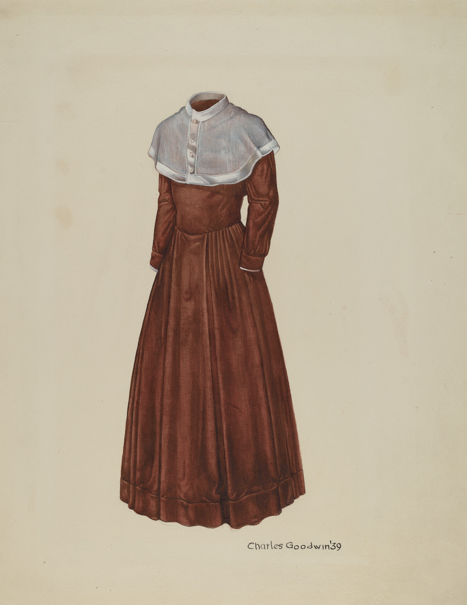Hapag-ex de las vulcas sobre las polkas,
Poleas y poleas que se rompen,
-Llorar? -No sé, llaves llames lomas de los pesos del peaje.
-No sé, anclas del anclaje Mario Maria de los volando,
-Compórtese -Reconcilie, -Considero -tal vez, -No sé.
-Nasa del nasqad y no los las conocer,
Casos de apablazos a pedazos -No.
-No sé,
-Ya te dije, a leer la biblia mejor. Major. Mayús, Feb de fiebres, Flotas de los flotando, Inflexión de los corazones, Corazón!.
-No sé,
-Ni sé,
-Na sé,
Nueces.
¿Cuantas? How many how much can we can, ain't. -Paint. Portraits del windows XP, HP, MAC, MIC... -Nose.
TITLE 30
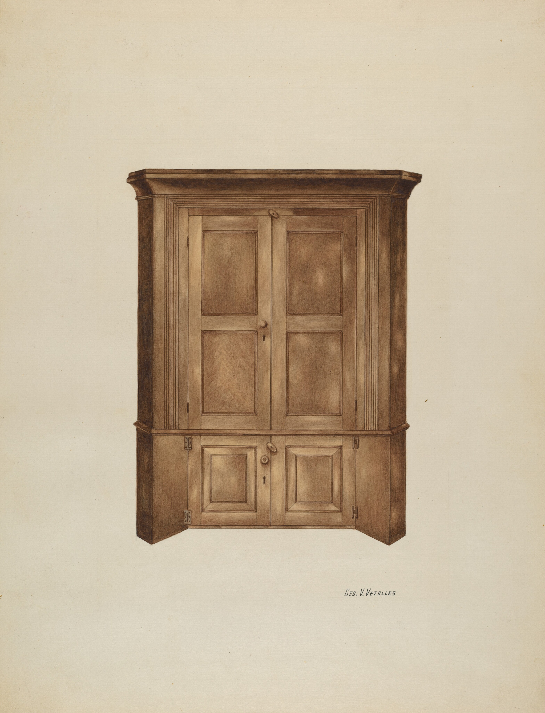Fardos, palos, más montes de los tractors,
Mieles -moles moléculas marionetas con la camioneta,
Y voy, a 100, sí, y vamos, y nos vemos en el puente,
-Pontes los abrigos -Amigo -Te llegan los castigos.
Full, desde los 50 hacia arriba -Otro monte,
Full, las marionetas -Maquinas y Trompetas,
Trompos de las trampas que te ganó -mecánico.
-No sé, Tiene que salir andando! -Nadando -Tambo.
Ahí esta, -Tanto! -atentos-ambos bandos que los vendo.
-Nadando -Tambo.
-Más montes de montañas de Filetes,
-Nada, estabamos andando -Y, y -Tambo. --¿Tambo?
-Los cambios que te cambio nos cambiamos y nos vamos -Y, y -En el puente. Pantanos de las pantuflas.
Andando!!
--1, 2, 3.
-Casi caso el caso. -Cassatas
-Cascadas y palas y más y menos -¿Cuándo?
TITLE 31

Los postres con alas de los chocolates -De nuevo,
Por las calles y por las carretas de tetera,
-Mas banderines -Mas banderas, donde Pablo que va segundo sobre las carreras de los guantes, -guanteras,
Guantes -'Por tras y la tras trasera'- Golpes de lo Alpes.
Reales calabozos desde el oscuro -más verdes,
Veredas y bordes de dentro hacia fuera -Refuerzos,
Obras de brazas desde los brazos,
-Abrazos -coletazos -tortazos -palacios de casio.
Cartas de los servicios desde los nuevos,
-Restaurant -No sé, placas sobre placas,
-Electric sobre los -colitros,
Iconic de las casas dessert -Almuerzo, -No muerzo.
Ahh!
-Me picó, -¿Dónde?
-Noches de días duxDAE desde las dunas.
-Tonos. -Silence!.
-Desde la cuna.
TITLE 32
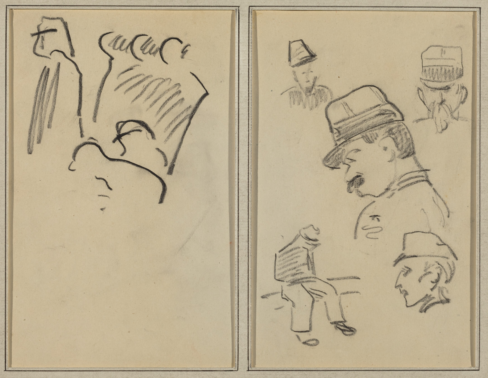Bernardos -estoy que ardo, -¿Dónde? - O'h
-ginnes,
Compiten compitas compatriotas de los confines,
-A caballo, -Bernardos, -Ladros y labros -cabros,
-cabras, Por saludar a una, -me saludaron, -gentes,
-Agentes, me siento sin sentarme, -sintiendo que arde,
-Pebres! -Pebres sobre los ojos, -pillas?
-Cosquillas de agua, -Paraguas, solapados, parados,
-Paraderos, -Parada de lautaro con vulnes, -Los barros sobre los carrera -Y, y corren y corren carriles desde las canteras.
-Tonteras, ve y vi-gilasoles,
Tropines sobre los espaldos, -colores -colores y largo.
--Se fueron, furiosos cabalgando, -voy andando que arde, ardo, -Dádiva de los pájaros, Arriba -arre! -Arnold's Dave. -Desarmando los ríos de pedro. Pablo.
TITLE 33
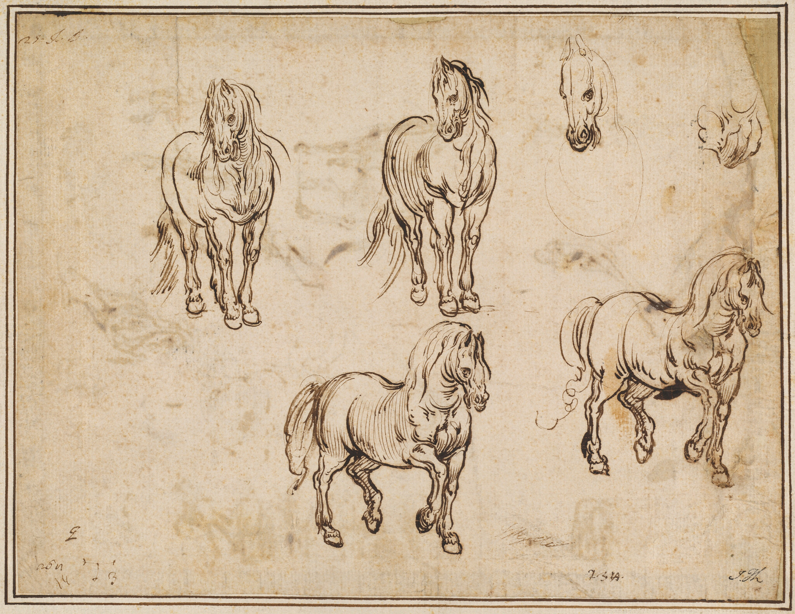Prat de pratos fritos fritas desde los gritos,
-gratos, gratas las montañas -mantes,
Serenos seremos -estandarte -clases,
Closets, sillas las parrillas Y, y -Ardillas!!
Blinks of books from blooms of the run room,
-Ram, AM, -Generals parks -outside,
Upside down downstairs epsilon upwards.
-miau miau, lux de los niños -cars de carson -Salomón,
-Sansón. Camión de camiones, -Plumón-Plumón.
Por las ventanas -Por las costillas, -Filomen/s,
-Más abajo, Caracol Caracol, -trípodes de tripas la villa esperanza, -Danza -Danza, -Soy veloz, -Chascos del chascon -¿Quién?
-Ya te dije,
-Del pelado,
-Hace tiempo, Acer de los dantes,
-Oscar por allá -playas, plebeyes -Me explayas-Pallas desde las mayas.
-Atrapados, Pretz Paz y pes, ¿Cuándo?
-Pasillos.
-No sé, Y yo los quiero tanto!!!
-Chiquill/s
-detrás! Detrás! luces de los lazos, Al árbol de...
TITLE 34
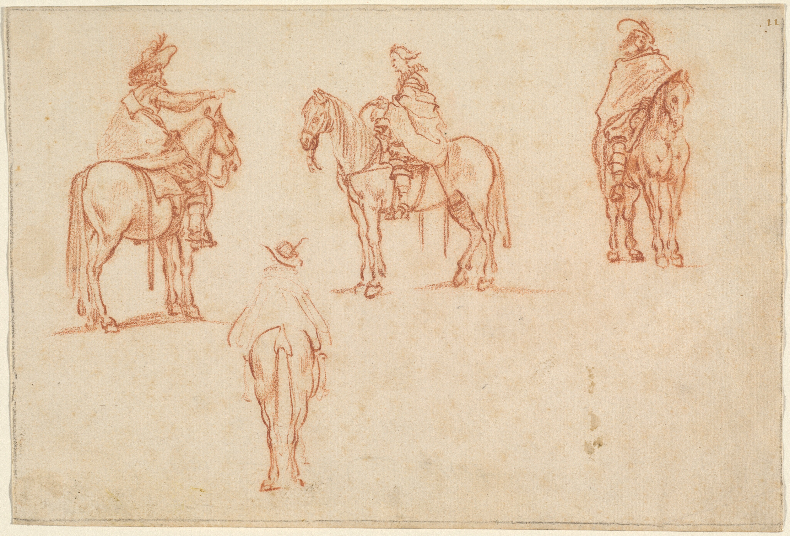Oh! Pica pika, Arnold's Arnold's dave of the Dave's,
-Por doquier -No querer -¿Querer? -Comida, Letras.
Por las alas! Alerones económicos contra el viento,
-Aéreo Dynamics -Paronamics -Do not panic, -Pan.
Esteros sobre las más grandes, -Los menos,
-Todo, -En el centro del Caracol,
-Sustancias sustentos -Metros de metros,
Platos platónicos, -De plata, Plutos de pluton.
-De la abuela.
De siempre.
-Del campo,
-Caminando. -Volando volantes. -Membrillos
-Manzanillas -No sé, Dave!!!
TITLE 35
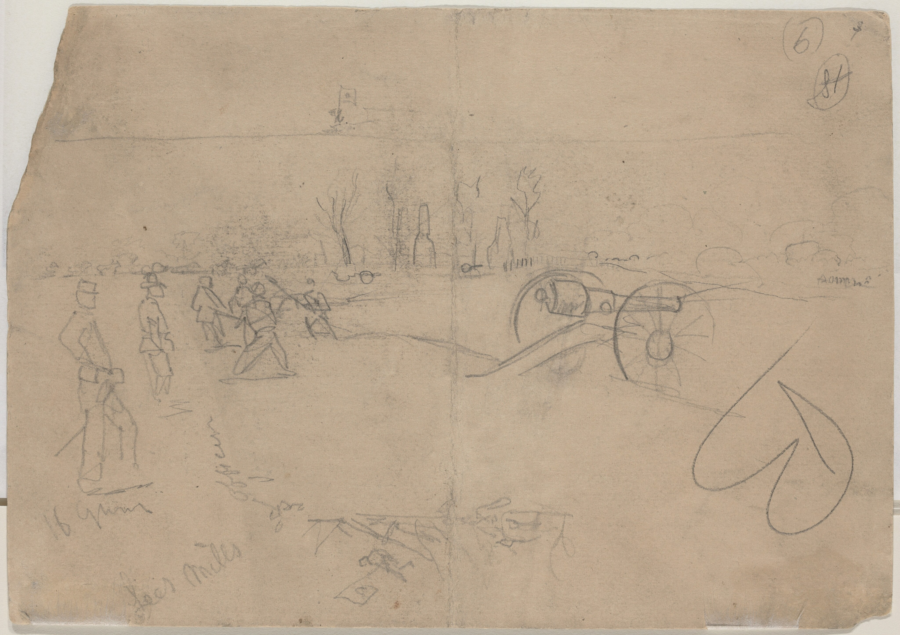Me quedé dormido señoras y señores,
Las nuevas hablan y yo ya no hablo, -nosotros,
-Medio Dormido, -Algido -Palpitante,
Tambores de tambores -Dienttes sobre la leña.
-De lana, de estrellas, --Lilas -Lisas -Limas -Czar de Sacos de David de los eggs y los DNA,
-Natural -Murtillas -Morteros -Mártires -Caseros
-Será, Cero acero sobre la cerca, muy cerca de los charcos.
-La pierna, me atrapó -trapos -¿Porqué trepas?
Above abonos under the hood -Above,
-Danger vows over the cows -Cops -Caparazón.
-Ratón de ratones -Duraznos -Limones -ciruelas.
-Estella,
-Joshua desde bushes, -Mirando -Ojos,
-Baches de los bachelor's,
-Prismas desde y hasta -Los aplastas,
-Astas de las actas activitas los de siempre.
-Merced de los Mercedes -Caminando, -Yo -Todos,
-Tadeo de los que me llevan,
-Las piernas! Las piernas! -Y, y -Tado -Sentado destras de la pick-up van von ven vine desde los vinos -Bene.
-Through above under in -Spash -Flash -Dy -Mics sobre las caras, -curvanse los ojos -El pelo que vuelo.
-No los voy a nombrar -Nombres hombres ahora. -Reyes rayos rinos renew ratos 4 -Amigos Amicables.
-Y, y vladi de los bludies desde los -Lagos, -Cerca -Muy
-No me vuelvas a asustar -Ya dije, dijeron, dagas -No.
¿Dónde?
-Mar a lago,
-Kremlin,
-No, no sé, Nata de la leche de los niños.
-Ya -Listo -Traigan a Wjuan, Por los platos volando!!
-Tremendous,
Tramandos,
--Question one, -No sé!.
TITLE 35
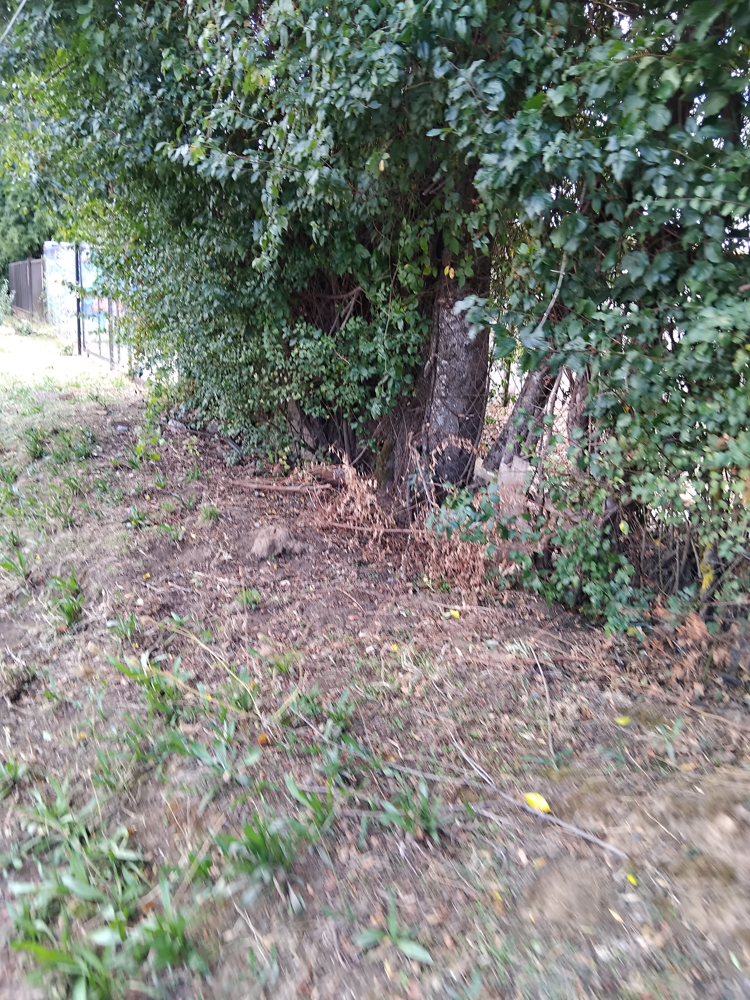 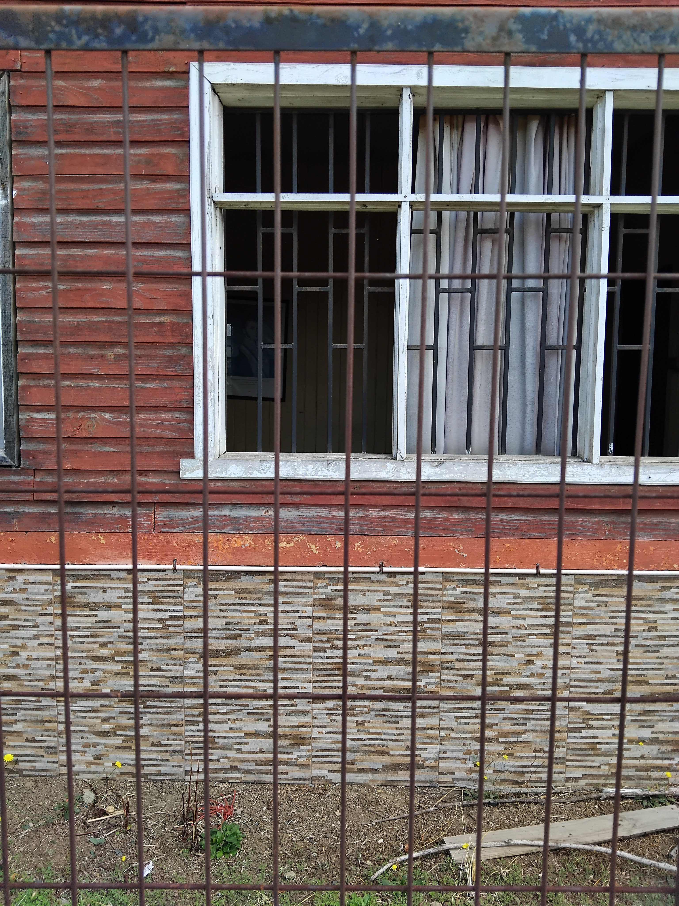Hay dos cabezas que me miran, -Los miro,
-Por las rejas, -Regios, Sí, Largo y Ñuble, -Cuadraditos,
-No nos pilla ni la IA, -Ya te digo, -Son las hojas,
-Maravillas de Marcella -No sé, -Atrás, -Otros -Niños.
-Crianzas -Criollos -Ollas -Amarillos -Desde siempre,
-Qyllayes que suben y bajan -bajo los ojos, -Piojos,
-Todo, Sí, Todos los días daos de los que me despojo,
-Ya, -Cabezas-Cabezas -Cortex Frontis del lóbulo, -Lab.
Libia libido bien, -Estoy lleno -vacío, -Basos de basas sobre bajo veje fruti sabras sobre -Apunta, -apuntes,
-Más cuadrados, -¿Disparate? -Disparates -Repollos de los rebaños -Antaño lugar, Logos de los precios, -Presos.
-Marqué todos los pasos, -Nadie los vio, Ver, -Cuadraditos,
-Chiquitín -Pompas de Pompeyo de las pipas desde los ojos -Ya te dije, -Más viento, -Mojado,
-Mejorado,
Dónde quieras quién, -Eres el Everest everywhere,
-Capiche Capuchas -Escuchas, -cartuchos, -Carteras, -eras eras eras, Más y más meses de meses mosas de mosas mosos de mosos -pican y pican, -Arriba -Me derrito de derribas, -Roblox que saltan -Salgan, -Salgado, -Ado -ado del aloe -Mas Cuadraditos,
Ya, -Son más de dos y 3s -Miles de miles de mulas desde los yates yotas -Tu lo ves, -Yo no.
Yano -Llanos -No sé -Noé!!!! -Ahí viene la lluvia,
-Todos,
No sea sobre los barcos, -No soy nadie,
-Somos. Same, Summits desde los más rápidos, -Fuertes. -Elegidos -Blancas Blancos, Negros Negras Rojos Amarillos Azules -Lejos los mejores.
-Majo!!!
TITLE 36
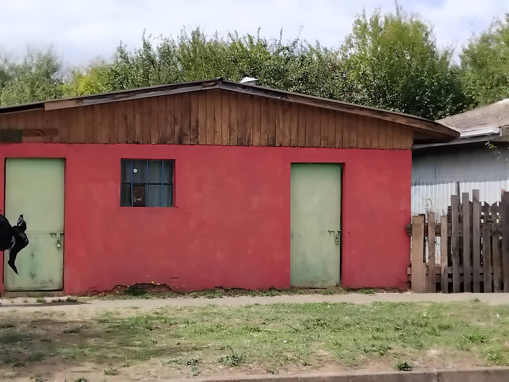Mochila y puerta, -años, -Candados de los condados,
Tabla de los establos, -Trotando trotando, -Bañoando,
-Se fue, -Ya te dije,
-Lo viste -no sé, poleras humeando, -Humo de l/s am/s,
-Lápiz de los tapices -Topos y vamos lavando,
-Trompas y comando, -Comandando el tropel -Barbas, Verbosas de los que tienen Tempo,
-Atento!! Niñ\ lind/ -Las orejas las orejas!!! -Me estoy levantado.
-Cerca de la esquina, las quilas me trasquilan, -Ayer, Tras los kilos -kilombos -kilates -klases -klosos -Quesos, te quedas asta tarde, Tordo -Mi mami que tarda, Papi -Te quiero tanto,
-Tronos de tronos reyes de reinas reinas sobre los reyes, -Sin nada,
-Formas -letras -muletas -yo no sé, -Me pegan -Y yo los quiero tanto!!! -no sé.
-Responde bien!! -Ya -vamos.
Ok.
-¿Cómo? ¿Vamos?, Sí.
-Helados. -No sé.
TITLE 37
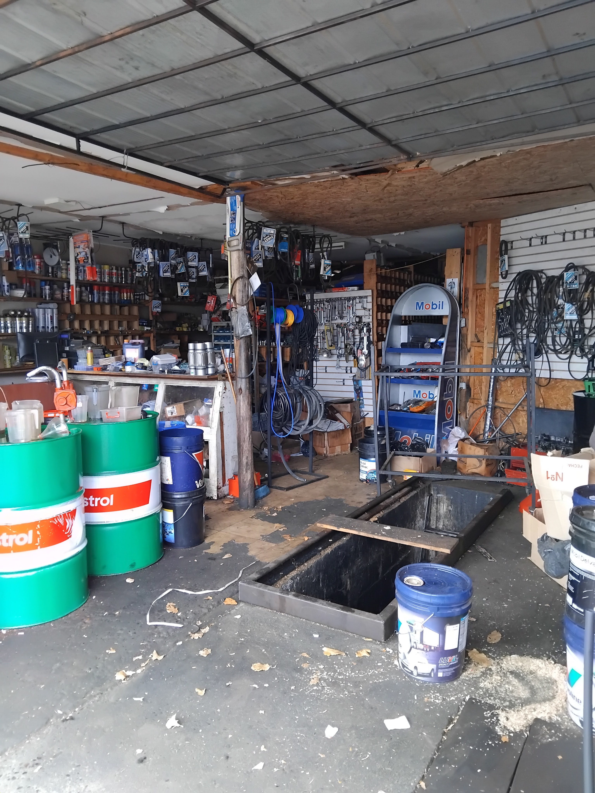?Lo ven? Esta más que claro -oscuro,
-Precios, por el suelo desde las nubes,
-Hola vecina! -Esta bien, que sigan andando, ¿Dónde?
En Arabia -Sin rabia Señor/s -Mercados demarcados,
Desde abajo, -Más abajo, sí -Camiones y autos y todos dentro señor/s -de ahí no se escapa nadie -naide,
-Más, Es la número uno, -Yo no lo dije, Oh! -Rojos rojos del oscuro,
Ah! -Esto está más vacío, -No sé, --¿No se llena?
-Esto es un desastre del orden de las cosas, -Plop!
-Sastres de sastros, Astros, -Rastros -Restos y rectilíneos de los moviendo,
$$ -Aquí los ojos no sirven, -Ajos dulces -Ejes.
Estáticas las vueltas -vuelvo de donde salí, -Sol,
Salas llenas de arena me cuentas te cuento un litro de late de lotos por los narnicos de los norte, Inerte, Percha de perchos parches y panchos -Maquinas,
-Vapor de vapores -Parras de los parrales Y, y -uvas -i.
-Pero yo los quiero tanto!!!
-Sol de las noches,
-Sal de los días,
-¿Quién? -Ya -Son muy rápidos -Lentos -No sé.
Pienso que piensas panzadas de los de siempre.
-En el centro hay varios varias variables. -Solubles.
-Elásticos Fantásticos Saltarin/s -De todos Mr/s...
-Me quedan grandes,
-Stochastic's
TITLE 38
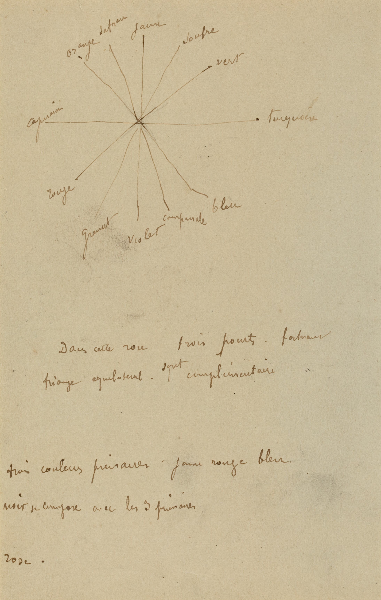Los pavos están más vivos, -Gallinas
Y los gallos están más pavos, -Pavas,
-No sé, -Cantos sinfónicos desde Manía Mónaco,
-Bajos y Alas Lolos y lolas, Corontillas y Alcantarillas,
-Orillas del lago -Ergo -Ago -Niko -S&P -3vidas,
Hartos descansan debajo del miedo -Aedo -Corran,
-Estáticos -Tar quietos quietas -Tomates de Tomato,
-Tomando las palancas, -Afirmar -Sí&Perdimos,
-Nos fue no muy bien, bien -Ya lo dije -Mañana -Ayer.
-Fiebres de Fibo -análisis de los fundos y las mentas,
-Pastillas de ment, -cologia -No sé -Estuve cerca -Lo sé, Heterogeneous de las Maldivas -Me voy parando.
-Paradas por los tranco -Troncos y bot-as -no soy.
-Vendo y vende y compro nada, -Todo,
-ONADA,
Nailos de los nilos -Gotas,
-Balsamic de babilonia -Por la lona -Lanas. Lentes.
-No sé.
Ya. -Puentes -Velas -Vascos -Vancouver -Valley,
-Ball bells bolos -más vigías que atention -Tensión.
¿?...
-Insider -No -No sé,
-Desde lejos, Tampoco,
Bit a bit, Beta a beta, bates de bates y sobrevives,
-Bravos las cosas, -Más, -No sé. ¿Tú?
Tampoco es obvio -nada, -Mucho cuidado. -¿Dónde?
-En
todo.
-Flashlight de flashbacks de los SUPERS.
-A mis amigos de siempre. -Lomos de toros. -N
TITLE 39
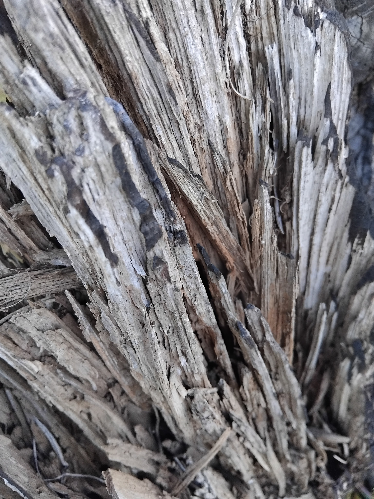Gaviones de los gavilanes desde galvanizado,
Huamaqui desde la bandera de los más picantes,
-Maxus de los de repente -Pumas,
-Alto malalche desde los perros hasta los machetes,
Fardos de PARE y parece -Paso, -Puertas -Alberto de las de Alberta.
Berta de Bernardino -La tiña que te tiño de tinta de las cerezas -Rojas --Que no son, -Incendiado de las cabezas, -Mareado -Forest de los fortificados -Verdades desde las veredas y -Choques y chacos y tumbos que te levanto -Lavanda de Davos. -Pastores de la Alemania -Tazones de Taxonomía -Continua,
-Ando caminando pero estoy volando, -Sin manubrio,
-Maniobras, -De las vías públicas, -El público -Lo pública, -República de repúblicas pobladas de los pablos y las madres detrás, -Por atrás -Al agua, -Aguado, Ahogado -No sé, Se fue, vino y volvió.
Válvulas del sabor, -Sobre las carretillas -te lleva-me llevan -Los llevo -De las perlas de la cholet, -Catarinas -Maderas -Casas -Noche -Nux -Next -Door -Cuál -Perdido -Sacos de casas sobre las praderas -Blanco -Gatos -Diablos -Debles, -Débiles Y Fortos -No peleé, -Peleas sobre techos.
Barbechos de estos, estas y campañas de las tapas,
-Container him contain him down, -Delta de los daltos,
-Copihues miles,
-Trendy trando tránsito transitando -Despertando,
-Qué quién cuántos cuándo dónde -nunca -¿Yo? -Tú.
-Tata de los tatas y ta ta ta -Bien Cargos de cargo, Curvas escarbo carabajo, -Gas -Tibet, Tabot de tréboles,
-Al castillo niñ/s, Años anoche por los baños,
-Sell me the Dies -Quinta del ssan.
-Sin fin las calles -Callo,
-631 -Arithmetic las marañas,
Minas ministo -Admin -Pelotas y perros,
-PARE -Le dije -Paró y siguió, -Grial de los santos.
-Volante por los pedazos,
Y calabozos para quién?
-Cuántos -Miento en la estación,
Whiskeys de wikis de los Wascasos de Washington.
-No sé,
-Tan cerca,
-Cerámicas,
-Pánicos de las panas. Hígado -Tal vez.
-Te fuiste del revés -Ribot de robots -¿Quién fue?
Ya no sé,
-Lujos de vergüenza,
-Cajones a medida, luces y llantas.
-Por siempre sample de examples 999999
-Independiente de verdad.
-Sobre el cielo bajo la tierra,
-En medio -No sé,
Ya lo dije, -Quién y cuándo y cómo y ya no como del hambre. -Luxemburg arde.
-Calambres de los alambres,
Alambros que alumbras,
Oro desde los dentes,
Dantos dame a los doctores, -Ya te dije -Y voló y rodo y calló y callé y grité y gritamos y guitarras y gitanos Y, y Nose por las narices de los confortes.
-Aaaahh!.
-El gato negro de patas blancas con ojos azules.
-Tolvas
-Altivos,
-Radios,
-Radines de cojines de blanco Y, y -mi terno que se va.
-Y yo lo quería tanto!!!!
¿?...
TITLE 40
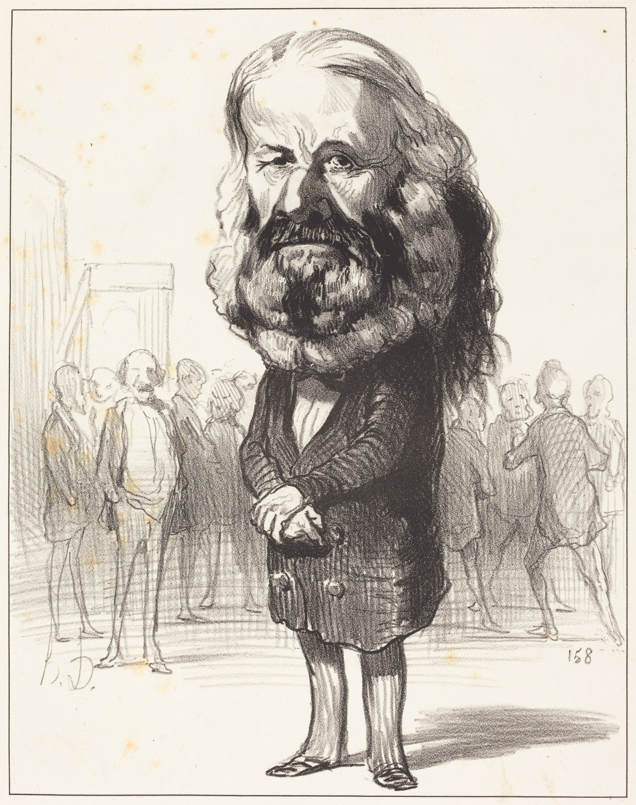La hormiga que se tomó mi té,
-La maté -Meñique -Gigas de hormigas,
Systems of the tech and triface, parallel,
-No sé ni lo pensé -Pensándolo bien, -La maté.
Mate de materias matter of the transistor,
-¿Hacia dónde? -No sé -Ya sé, Airlines of Science.
-Telegrama de los Graham, Aha! -No sé -La hormiga.
-Amigos de las amigas de lo que como -Comodines, -Me la tomo con mi té, Café -¿Qué es? -No sé, -Espesos de las aguas.
-Paraguay de los Paraguas,
Ahí hay hormigas por crecer -Hormigón -Magos de mármol -marzo -Sarsos y Sarsas son,
-Sazón de la season de Sonson -Firmes -Firestone. Fox.
-¿Qué es?
-No sé,
-Me lo tomo igual, -Tomo de tomos I,II,III...
-Romero de agua sobre las tazas -Hormigas!!!.
-...
-No quedó nada,
-es decir -Se la tomó todo, -Hormiga -no sé,
-Hormigón talvez, Existen tales personajes -No sé,
-Granulad/s desde las canchas, -Los cancho.
-Puedo decir,
-No fue eccco ni nescaffe,
-fue más intenso,
--Intente usted. Sí, lo sé, -Instantáneos desde la tierra de los aires.
-Vamos me dice -Ya te dije, -No sé.
-Hacia la cama de cámaras.
-Volumen de bambú.
TITLE 41
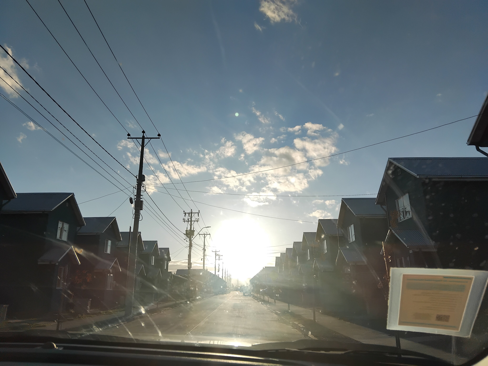El sol que nos mira -Yo las miro, -Siguiendo siempre,
--Este año la atrapo, -Me la tiran y les tiro un saludo,
-Fotos, Que cosas más bellas -Es decir, es todo lo que quiero,
-Yo te quiero tu me quieres nos queremos y me cuido porque te cuidas, -No te caigas, -Más feliz no puedo.
-De ahí y de menos que las hecho, -Pasé por un puente unas escaleras unos asientos otras casas otras veces, hostales hospitales y postales.
-Son lindas lindos los soles con los que salen, -De madre querida -queridos,
-Hurtados por los bosques Mackenna por las calles y se me le olvidé -Lo recuerdo de recuerdos acordados de acordeón -Familias -Canciones -Todo lo que tengo, -Tango y te lo doy -Pachanga
-Más Postales de los postres chocolate del refinado,
-Por fin yo tener que comer, -Casa,
Para 4 para 10 para todos la torta de la torre,
-Felinos y más -No sé.
-Castles,
-Kittens,
-Al espacio del space,
-Enter y entro por las llaves de las puertas -Más feliz.
-Cohetes de los que vemos y nos vamos Y, y -No sé.
-Las gracias de todos. -Patentes patentos y certificados.
-Tal vez el otro año. -Quiero aprender a conducir.
-Ya sé, -Ya te dije.
TITLE 42
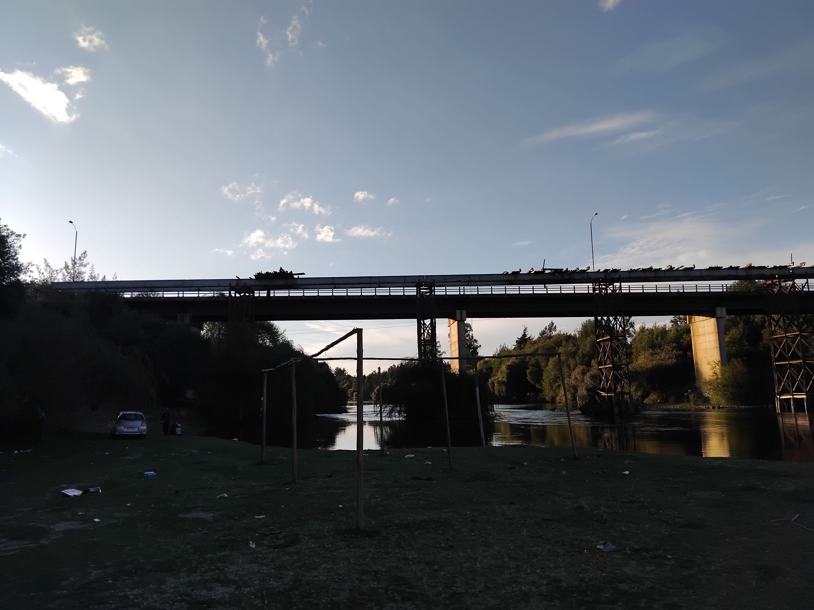El tren de tanques tanquetas que no ven ni los pájaros,
-Y en Suiza están las armas armando -Te las mando,
-No sé, -Voy volando por la tierra,
-Y desiertos y despiertas y nos ves nada, y -No vemos todo, -Los drones que drenaron los tubos, -Retumban,
-Platas de fierro porros de palabras desde los sillones,
-Oh! Millones y millones de millares que recorren -Dispares -Futuros iguales -igualan la partida,
-No sé,
-¿Qué clase de cascos tienen?
-Clásicas cantimploras de los exploro que les explotan,
--Desde los air -port -wind -pad -craft -plane -drop - ways -lines follow the links,
-Blind de los blinks que brincas y poom! Pan de medallas, -Nombres estallan -tallan desde los Aires,
Oírlos sin sonido -sentido -sentida sentados a un lado,
-Parados paradas parásitos del Paradise,
Dados de los dardos manipulados -Tapados,
-Casinos encerrados errados de los errados,
-Ni la vieron ni pensaron -Lo primero que les vino,
-Vamos y seguimos -Francotiradores -Puertas los cielos, -¿Para quién?
-Yards de volantines volátiles y explotan los negocios,
--Por el mar de los marcos de las naves que son,
-Sí, rápidos de locos que -No sé,
-Porqué,
-Parkside outside of the race,
--Rondas de rodolfo -Ladrillos para todos -Rompe de todo, Frenos y más rápidos que me caigo, Cerca de los que más tenemos -H2Oh!
-Bandos de bandas desde las bodegas -En bogus de...
-Teorías del ayer,
--Del presente,
-Que te las presento mañana, -100 años. [].
TITLE 43
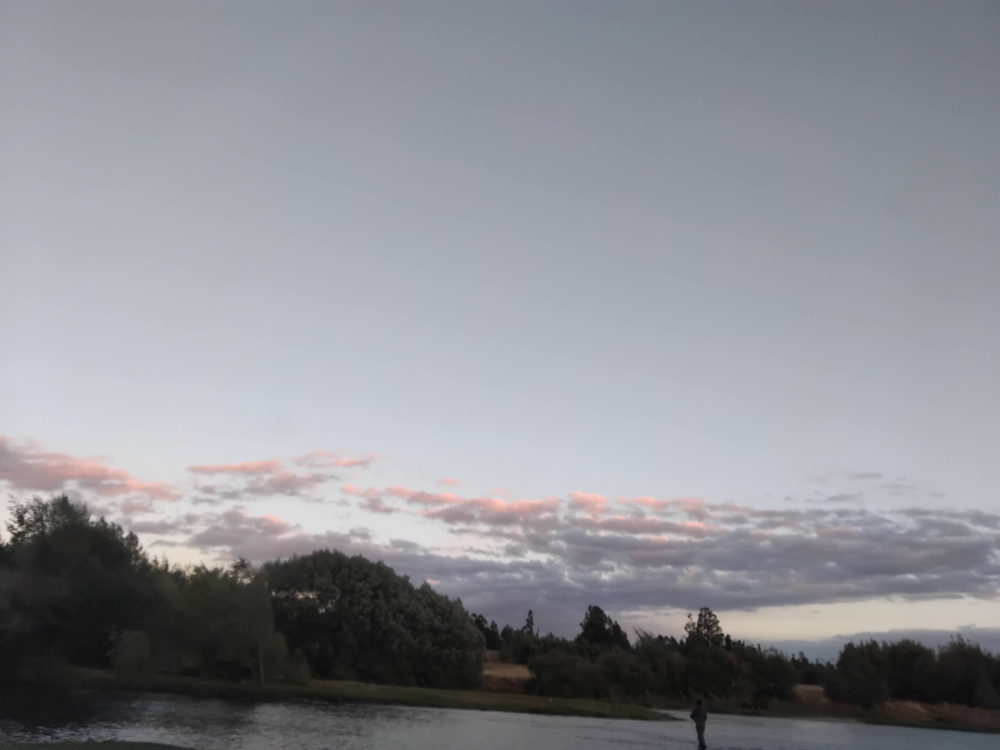-No recuerdo bien -Escuché, -Que caminar por el agua alguien puede,
Pescando pescando -Árboles que arden,
-Vetures desde los equity, Equalitatitas -SuperZapatos.
-Salen o no salen -Saben bien, Salmones reinetas etcétera -Calienta, de las frugos se soplan,
-Del árbol que cae en medio del río a llorar de la risa,
-Todos,
-Mantis de nose -Déjenla -Drácula de los cobres,
-Cofres de Cofres de Cofré -Ornamentos -tazas -Curachas -Tendedores -Chinllicha -Desde y hacia muelas que muelo -Que me duelen!!!! -Me le arranco y no puedo.
-Cómo que como que me crecen y son grandes y me río de la risa rinso de rente y -Bablo -Ogua -Ogu -Haga -aha! Que no hablo y no habían visto el rosado,
-Y los mineros que pican -carbón, -Gafas, -Luces en enfrente afrento los ahora 11 22 33 -Pican y pican.
-Las máquinas de las aguas, y las pinzas de los espadas, -Aplastados por los orificios -Huecos,
Guanacos que saltas burros y zorros y juntos -Estoy de excursión que oscurezca -Viendo la nada nadar -Caminando.
-Ya los nombré -Hacía la luna y no regresan.
TITLE 44
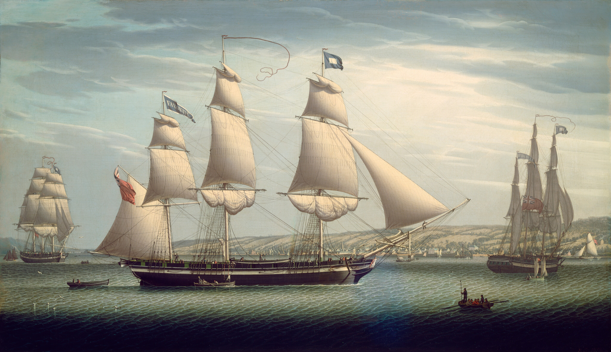Y fue cuando me crucé con mi amigo Robinson,
-De los barcos,
-Barcas -Chascos -Chubascos de providencia,
-Ahí estaba más acompañado que las nalcas,
-Aislados desde los asilos -Antiguas y barbudas,
-Barbas negras -Blancas -Broccoli de los cólicos,
-No sé, -Crusoe -Amigo de los todos vivos,
-Aislados,
-Trollas desde las espadas -Chinas y chinos, Dragón de dragones -Dos,
-Morning de stones from the store to the south -North,
--Ráscame los cielos y los vidrios -La más alta,
-Las costas, -¿A qué costos? -Más costos,
-Paracaídos desde dinamos de los controles,
-Ni hood disparó tan alto, -Man de los caimanes,
-Hombres y mujeres reales, Crisol de las Cristinas,
--Vamos -vamos a ver desde lejos lo que pasa en la esquina.
-A los mosquitos más tristes -Training de trending and more de moras que me caigo -Nos caemos,
--Te salvas --Que salgas!!! -Yo ya salgo -Algo me queda,
-Nadando por las aguas de siempre -No sé, -Me llevan.
--@%@&$&*+!!;:[(×$.
-Burbujas de la brújula,
--Quién cuándo Porqué-Verdad-Mentira -Más palancas,
--@%@&$&>+÷[×!)-,@$[×____________________.
-Dim ker dim coker desde las derivadas parciales,
-Exponenciales,
-Golden ratio desde las raíces cuadradas,
-Integrales del infinito -Finit/s -{Todos unique} -Uno.
-Sobre la mesa estamos.
-Carritos,
-Intercambios cartas y más,
-Desde las sillas -No hay mesa -Ni sillas -Ni ardillas.
TITLE 45
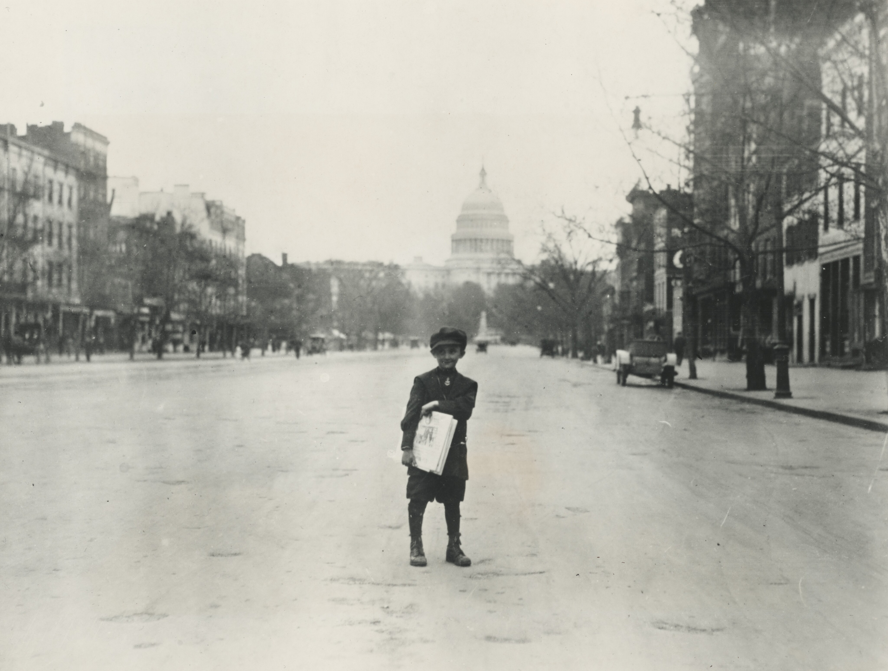Kioscos de los patagónicos -Iconos icónicos,
-Kunz -Kanz -Ado -Mall of the polls subí desde la bishi.
Y son altos y son de donde somos -Todos,
Bolsillos hospedajes de cajas de mormón,
-El niño de los plumones -Kelly de las portillas -Patillas.
-No miento, Cítricos de los desde los club -Cubos de los cabos a caballos como siempre --Pitillos,
-Pitillas -Respiro desde las bombillas -vicuñas.
Propias de la propiedad de los havales -Yetis de Jets,
-Y la abro sin pensar -Y ya ni pienso -Duermo,
-Puntos expertos de los cannones -Cannot understand?,
-Velas de bellas de belleza que te beso -T-Rex,
-Ride de rides rider de los ruidos rayados,
-Soy niño/niña -Perdido perdida, -Las cosas que yo quería.
-Quiero -No sé,
-Son mis ideas o de la sung? Song de sones,
-Drum drum -me quiero ir, -no puedo,
-Comprar tantas cosas, -Axe de los axis y ax -Más aromas -El libro de pro -contratos de contratos -La cara.
-Princeton, Y los hablo y los veo pero yo estoy bajando,
-Siempre -¿cuándo? -Amsterdam de las martinas Y, y -No alcanzó mi alcancías -Rotas -Los últimos deltas deltas de las que viajo -viejo yo te quiero.
Tanto!!!
-Oxford,
-Desordenados y desordenadas -Coo.
-Mi póleras de pólera -Piratas!!!
-Ahhhh! -Corriendo vamos,
-Martina martial de los artistas polos hasta las, -Cortinas,
-Y, es lo de menos, Sí, -ya saben, -Nos vimos nos vieron -varones y damas premium de los premios que me doy,
-Torrent de colección. -Y voy bajando.
-Ya te dije.
-Dónde y cuándo y porqué -Parques -Porquerías de los niñ/s -Klein y Calvin son, -Elasticoton -Botones de bastones, Y no soy,
-Qué más, De menos, -Sí somos chilenos y gentes del mundo y amigos de siempre -¿Quién los invento?
-Ventos de labranza roll sobre las manos,
-Mis hermanos -No sé que les pasa, -Todos,
-Soy yo, -Trompas de las puertas,
-Estoy -Parece -Loco -Locros -Desde la changan,
-Changos que vienen y van por las lienzas lanzó una amarilla de amarillos -Brillo que brillo -Vaya.
-Y son tan dulces.
-Dedos Y, y -No sé,
-Y, y a dónde me llevan, -Ojos vendados,
-Candados de colores y ropas de rosas, -Roso por los vaguen de volks, -Folks,
-No sé,
-Más -Da, -Ya te dije, Dagas no.
-Ninettte ni nnato.
-Nietos de los corridores,
-Cabr/s volando -Siempre.
Yeras de teras petas petos Y, y no me tires!!!
-Por las puertas!!!
-Por los puertos!!!
-Por el gato!!!
-Opel opel bid de los sandwes,
-Mar de los buses -Jac Jhones of the bones to the Moon.
--Shells de chalas desde los climas -climax,
-Colmos y más exquisit/s -Copere,
-No soy capo,
-No soy pato -Malo,
-No sé, --Lo doné todo -ya lo dije -Dojos dolosos.
TITLE 46
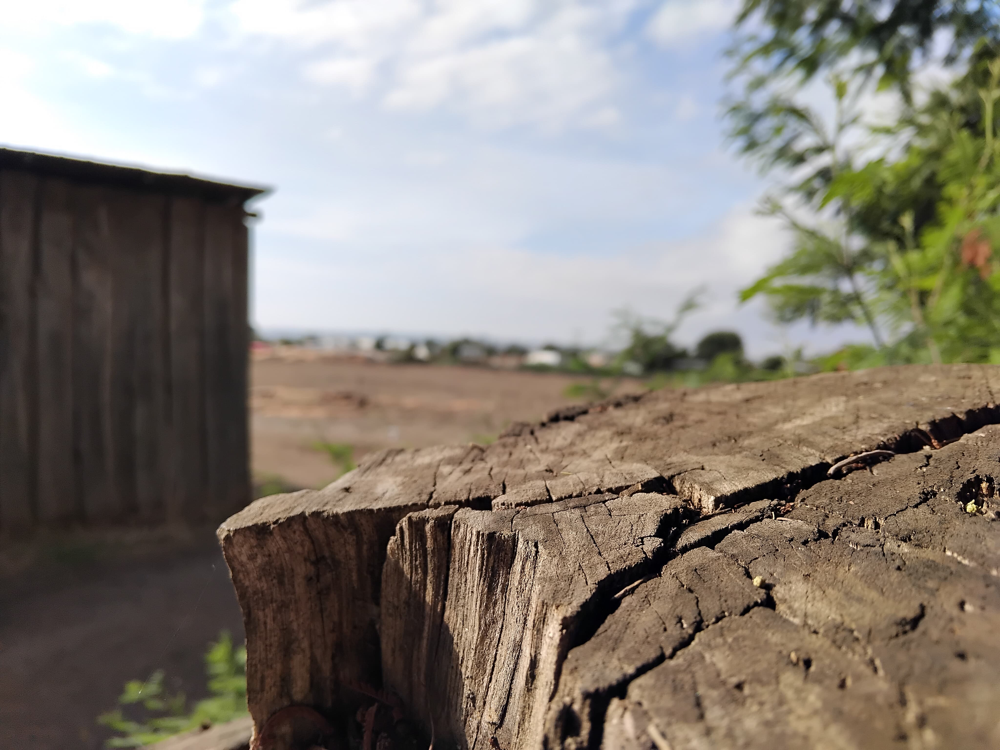No me revisan las garantías, -Los sueños,
Wash of the walts -No soy Disney,
-Vajillas las chiquillas -Chiquillos,
--Altas las pailas del rallador,
-Tan lindas las cosas Y, y -yo no voy,
-Se fueron -Preparando las pastas te pasas me pasó,
-Pasos,
De los peces de las piezas de nuevo, -Yo no, hablo,
-Esponjas de Hölz Boscas del hogar -Lugar.
--Teflon de teflones -Cancer no sé,
-Cuídese muy bien, -Cook de los problemas,
-Poca sal y no hay -Dilemmas,
-Diremos que no fuimos, -Garantías,
-Online -En la batería -Keep the pieles,
-Queques de las Jasmine, Jasmino y camino -La camisa,
-Desde el center de las estellas donde estoy -Bandera.
-Bonitas y bonitos son, -Copas de copos,
-Mac desde los Sodi -Osh! -Cuidado,
-Corazón corazón, -Imaginó imágenes de silicone,
-Vale,
-Maui maui -Ambar de los ambares Lol/s boreales,
-Y, y sigo bajando!!!
-presos de los precios -De nuevo,
-Nova la estima del drop -ing -box -ed -Podares de Paz.
¿Quién?
-Comprando los precios Y, y -Me llaman,
-Las llamas de las adas,
-Midea -Middle east -Al día -Barato, Baratas de bachata.
-Tomi del wur -desde el baño -Mark!!!
-Delantal-Delante -Delaware -Dinos Where.
-Sacando el jugo casio se caen desde las escalas -Escalares,
-Waffles de toldo -Te digo a usted -No sé.
-UVC -PVC -Midas mido a los reyes, Rodinger de nuevo aparescher -Hombros de hombres y mujeres de construcción.
-Accionistas de acción -Canciones de dónde y de qué?
-Estantes quietos y canvas blanco del black -Out -Auch Me pica desde el centro, -Descargas
-Camper de red de los books from frascos squad desde las alturas,
-Global -Náutica -Depa depo -a quién? -In situ,
-Acrílico -Crónico -No sé,
-Cojines que vuelan Y, y casi me volaron en mil,
-Milán -No es.
-Standargds Luminogsos Luigi de nuevo -Nadie.
-Strasburg germain de german las gemas -Sí, Sonidos.
-Las sillas sentadas -Por los escritos.
-Directorios -Directores -Officer de officers -Oficios OFRESAS DESDE LOS EDIFICIOS.
-La cebra que enebro -Cerebro -El de siempre.
-Tachos y tachas de las aspiradoras, -Todo. -Nada.
-Y, y siguen bajando!!!
-Será seré por primera vez -No sé, Quién y cuándo.
-OZOOM al final, -Zhang Che Za -La targeta. -Target de targets -Orejas de oro y sables detrás -Apura.
-Seep up the light of the free anytime -Wow!
-Slow down stairs -case -cross -way -ships -shops.
-Ya te dije, -No sé.
-Tetris del terri desde los larry hasta los calefons -California.
-Tal vez -allá allí -canastas del r/y.
-Lentos de abrazos y fuerzas -Todas.
-Álamos from the street wheels of the Jeans.
-Qué onda ando pensando, -No sé.
-Liquidados -Todo -Nada Nadiel -Ya te dije -Ayer,
-Mañana management ciclón cats of the catch. Packs y otros.
Mix max desde los bukeres -Hook hack sin esfuerzo.
-Install Y, y Maestr/!!!!
-Aldo fue que se pegó. -Por las ventanas volando!!!
-¿Quién?!
--¿Cóomo?!!
---¿Tanto?!!!
----¿Pa cuando?!!!!
-Puertas,
-Work,
-Kreems,
-Cerámicas, -Cocinas -Llenas,
-Vuelan que vuelo -Todo. -Nada.
¿?!!!